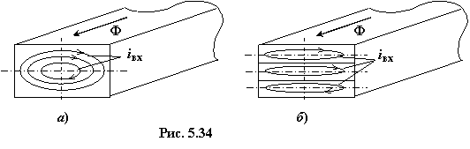
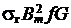
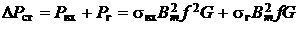

5.4.2.2.Магнитные потери в стали
Магнитный поток Ф(t) наводит ЭДС индукции не только в обмотке, но и в ферромагнитном сердечнике, а так как последний обычно электропроводен, то в нём возникают токи (рис. 5.34а), называемые вихревыми или токами Фуко, и соответственно потери мощности , где σвх − коэффициент в Вт/кг, приводимый в справочниках; Bm − максимальная магнитная индукция в Тл, G − масса стали в кг. Вихревые токи бесполезно нагревают стальной сердечник (если не принять мер) до высоких температур.
Чтобы уменьшить потери от вихревых токов, стальные сердечники устройств, работающих при переменном токе с частотой 50 Гц, изготавливают из пластин толщиной 0,35...0,5 мм, изолированных друг от друга (в результате чего эти токи замыкаются в каждой пластине (рис. 5.34б)), а также для их изготовления используют специальные (электротехнические) стали с высоким электрическим сопротивлением. Изоляция пластин осуществляется с помощью лаков, реже – бумаги.
|  |
В измерительных устройствах и при более высоких частотах применяется более тонкая листовая электротехническая сталь, а также магнитодиэлектрики и ферриты.
Кроме этого, при перемагничивании сердечника имеют место потери мощности Pг =  на гистерезис. Для уменьшения потерь мощности от явления гистерезиса в электромагнитных устройствах переменного тока используют сталь с узкой петлёй гистерезиса.
Суммарные активные потери в сердечнике называют магнитными потерями в стали и определяют по формуле
(5.21)
Для многих материалов в качестве справочной характеристики приводят удельные потери (Вт/кг) на частотах 50, 400 Гц при значениях индукции 1 Тл и 1,5 Тл с указанием толщины ленты или листа. Например, p1.0;50 = 1,4 Вт/кг для стали марки 1512 и толщиной листа 0,5 мм. Удельные потери составляют от 0,6 до 4 Вт/кг в зависимости от марки стали и толщины листа
при индукциях менее 1,5 Тл и достигают 8...13 Вт/кг для горячекатаных сталей
при индукции В = 1,5...1,7 Тл. Таким образом, реальная катушка со сталью потребляет активную мощность (энергию) из сети: незначительная её часть ΔPм = RI02 расходуется на нагрев обмотки, а основная часть ΔPст идёт на нагрев ферромагнитного
сердечника катушки, вызываемого вихревыми токами и явлением гистерезиса.